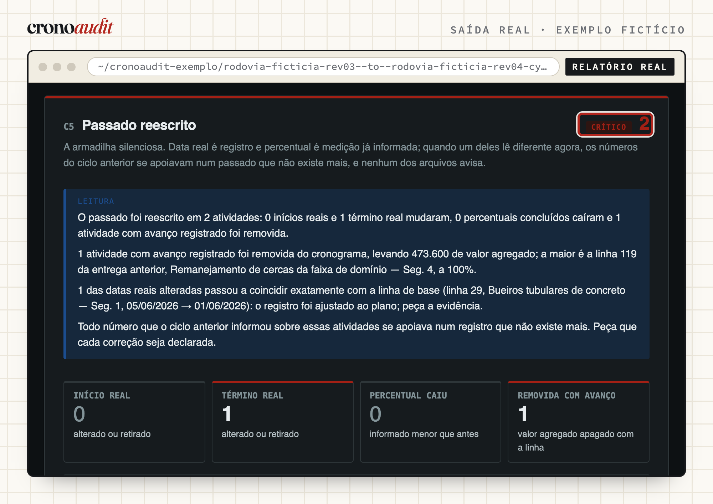

1
Um registro reescrito depois do fato.
O término real da linha 29 era 05/06/2026 na rev03 e aparece como 01/06/2026 na rev04, exatamente a data da linha de base. A linha 119, a 100%, foi removida, e 473.600 de valor agregado foram junto. Nenhum dos dois arquivos avisa.
